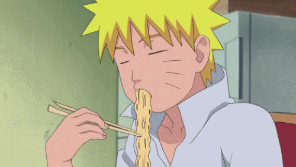

In this page we will reveal the secrets of the NEETS! How do they survive their degenerate lifestyle? The answer is the food! Since most of them haven't kidnapped their waifu yet, they have developed some esoteric weebie foods.
These are the weeb meals we have discovered: